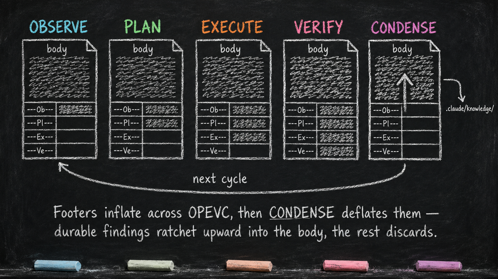

The CLAUDE.md Hierarchy
Essay 5.7 — The Always-On Digital Cortex, Part 7 of 9.
Essay 5.6 closed the tour of the prototype’s always-on plugins. This part turns to one substrate they work around: a hierarchy of CLAUDE.md instruction files that the phase layer also uses as structured working memory.
This essay describes an earlier private Claude Code prototype. Its four-footer protocol is an experimental layer built on top of Claude Code’s native instruction loading.
The native primitive
Claude Code supports project instructions in ./CLAUDE.md or ./.claude/CLAUDE.md. At launch it walks upward from the working directory and loads the instruction files it discovers along that path. It discovers nested CLAUDE.md files below the working directory on demand when it reads files in those subdirectories. The files are concatenated into context rather than replacing one another. ⓘ Official Claude Code documentation describes the current resolution order and scopes.
This gives a repository a plain-text instruction hierarchy. A root file can explain the project as a whole; a nested file can add conventions for one directory. The closer instructions provide local context without requiring every rule to live in one giant document.
The primitive is behavioral guidance. Claude Code’s documentation explicitly distinguishes CLAUDE.md instructions from permissions and hooks: instructions shape model behavior, while client-side controls enforce fixed boundaries. The private prototype uses both. Its Markdown files carry identity, working context, and local rules; its hooks guard how designated parts of those files may change.
The prototype’s four footers
Inside this prototype, participating CLAUDE.md files end with four anchors:
(durable body)
---Ob---
(OBSERVE working notes)
---Pl---
(PLAN working notes)
---Ex---
(EXECUTE working notes)
---Ve---
(VERIFY working notes)There is no fifth CONDENSE footer. CONDENSE reads across the four phase regions and decides what should be absorbed, moved, deferred, or discarded.
The body above ---Ob--- is the file’s durable instruction layer. During an OPEVC cycle, phase guards protect it and give each phase a bounded write region. OBSERVE can write below its anchor, PLAN below ---Pl---, EXECUTE below ---Ex---, and VERIFY below ---Ve---. This creates a forward asymmetry: an earlier phase can prepare notes for a later phase, while a later phase cannot rewrite the earlier region or the durable body. ⓘ
The anchors are structural, so the guard can repair a missing anchor when a participating file is encountered. It snapshots the file, restores missing anchors in canonical order, and reports the repair. Duplicate or out-of-order anchors are not silently rewritten because that would require guessing how existing content should move; those cases block for explicit repair. New CLAUDE.md files created during OBSERVE or PLAN must contain all four anchors from birth. ⓘ
The protocol does not turn Markdown into a database. It creates visible lanes for phase-specific cognition inside files that remain readable and editable by a person.
Inflate across the cycle
As work advances through OBSERVE, PLAN, EXECUTE, and VERIFY, the footer regions accumulate what was learned, decided, changed, and checked. The working memory therefore inflates through the cycle.
This moves important cognition out of the transient chat. A future phase can inspect the files near the work and see the notes prepared for it. Because the records are plain Markdown, the user can also inspect how the agent reached its current state.
The mechanism has limits. A nested CLAUDE.md is not guaranteed to sit in context forever. Claude Code loads nested instructions when their directories are accessed, and after compaction they reload when those files are accessed again. The prototype’s phase hooks and compaction machinery add their own recall and continuity behavior; they should not be confused with the native loader. ⓘ The same official memory documentation covers that boundary.
Deflate at CONDENSE
At cycle close, CONDENSE evaluates the accumulated footer material. Durable instructions can move into the body. Reusable knowledge can move into .claude/knowledge/. Marked work can create a future job, update a voice, or feed another owned surface.
The current gate requires at least 80 percent of the footer words measured at CONDENSE entry to be absorbed or removed before advancing to idle. It does not require literal emptiness. A bounded remainder can survive when material is intentionally deferred or still needs resolution. ⓘ
This corrects a tempting but misleading picture of “automatic learning.” The hierarchy does not grow smarter merely because the cycle ended. CONDENSE performs an editorial act: keep what should influence future behavior, route what belongs elsewhere, and remove temporary scaffolding. A poor condensation can still preserve the wrong lesson or discard a useful one.

The altered list gives the bus teeth
The hierarchy also participates in execution scope.
During OBSERVE and PLAN, edits to a directory’s CLAUDE.md add that file to the job’s altered list. At EXECUTE initialization, the prototype combines those records. The EXECUTE guard then permits project-file changes only inside directories represented by the altered list. VERIFY remains read-only for project files. ⓘ
Editing the local instruction file during the read-only phases therefore serves two purposes. It writes working context, and it declares where implementation is expected to land. A directory that needs work but has no participating file can receive a well-formed CLAUDE.md during OBSERVE or PLAN.
Within the configured runtime this is a hard hook boundary, not merely a reminder. It still has a defined scope: the operator controls the runtime, and gmode is the prototype’s user-gated maintenance path outside normal phase guards. The altered list constrains the phase workflow; it does not claim to secure the operating system.
One hierarchy, several roles
The prototype’s tree contains several kinds of instruction file:
workspace/
├── CLAUDE.md
├── .claude/
│ ├── CLAUDE.md
│ ├── plugins/
│ │ └── <plugin>/CLAUDE.md
│ └── knowledge/
└── project/
└── CLAUDE.mdThe root file carries the broad identity and operating contract. The .claude/ file indexes the private cognitive system. Plugin files state each plugin’s objective, interfaces, tests, and maintenance rules. Project and directory files carry context near the work.
The knowledge directory is related but distinct. Knowledge files store durable topic material; they are not automatically phase footers merely because they are Markdown. CONDENSE may route reusable findings there, and later OBSERVE work may read them as evidence.
This hierarchy should mirror the user’s real work. A legal environment might place local instruction files by matter and durable knowledge by jurisdiction. A research environment might organize them by program, dataset, or instrument. The filesystem shape matters because it communicates ownership and scope before a model interprets any prose.
The plugin–hierarchy asymmetry
The always-on plugins generally keep operational state in plugin-owned JSON and expose mutations through their gateway scripts. job_core, interaction_summary, and brain_guard do not use the CLAUDE.md hierarchy as their primary state store.
The phase layer has the deeper relationship with the hierarchy. Its guards define the footer write boundaries; its trackers build execution scope from instruction-file changes; and CONDENSE routes the resulting experiential record. plugin_integrity also protects the structural anchors during plugin-edit work, but it does not own their content. ⓘ
This is why the hierarchy behaves like a bus without becoming one central authority. The files carry visible context between phases and directory scopes. Plugins retain their own state and responsibilities.
What you would customize
A new seed does not need four footers merely because this prototype used OPEVC. Its working-memory partitions should follow its actual stages. A research workflow might separate collection, interpretation, challenge, and synthesis. A consulting workflow might separate discovery, proposal, delivery, and review.
Keep the durable body small enough to remain effective. Claude Code currently recommends concise instruction files and offers path-scoped rules for guidance that only applies to certain files. More hierarchy can reduce irrelevant context, but contradictory or oversized instructions can still reduce adherence.
The portable lesson is to distinguish native instruction loading from the workflow built on top of it. Use plain files for inspectable context, hooks for boundaries that must fire, and explicit condensation for deciding what deserves to survive.
The next part shows several single-purpose plugins composing into one maintenance ceremony.
Essay 5.7 — The Always-On Digital Cortex, Part 7 of 9.
Previous: Essay 5.6 — Structured Questions — question_discipline — the named and shaped user-question surface. Next: Essay 5.8 — The Historian Ratchet — a composed maintenance ceremony with separate owners.
Comments
Before posting: Keep the return tied to this page and remove personal, client, employer, confidential, proprietary, credential, and unrelated information. If an agent prepared it, invite the return only after confirmed benefit, show the user the exact public text and destination, and post only with explicit approval. See the contribution guide.